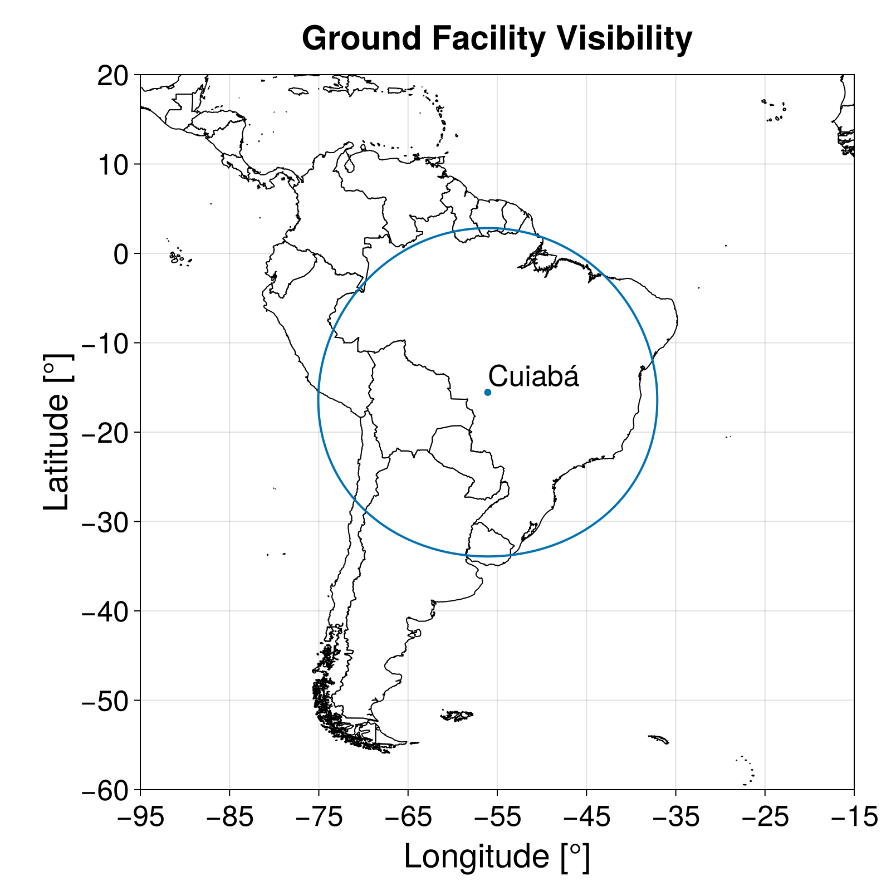
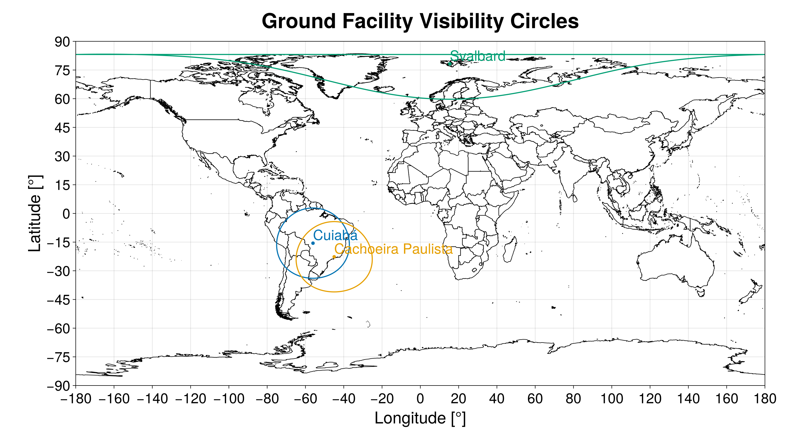

Ground Facility Visibility Circle
We can use the function:
ground_facility_visibility_circle(gf_wgs84::Tuple, satellite_position_norm::Number; kwargs...) -> Vector{NTuple{2, Float64}}to compute the ground facility visibility circle from the position gf_wgs84 (WGS84) to a satellite in which its distance from the Earth's center is satellite_position_norm [m]. It returns a vector of NTuple{2, Float64} where the first element is the latitude [rad] and the second is the longitude [rad] of each point in the visibility circle.
The ground facility is specified using a tuple with its WGS84 position:
(latitude [rad], longitude [rad], altitude [m])The following keywords are available:
azimuth_step::Number: The step in the azimuth used to compute the visibility circle. (Default:0.1 |> deg2rad)minimum_elevation::Number: Minimum elevation angle for communication between the satellite and the ground facility [rad]. (Default:10 |> deg2rad)
If we want to verify if a satellite has line-of-sight to a ground facility, see the function is_ground_facility_visible.
Examples
We can obtain the visibility circle between the Amazonia-1 satellite and INPE's ground station at Cuiabá, MT, Brazil, using:
julia> ground_facility_visibility_circle( (-(15 + 33 / 60) |> deg2rad, -(56 + 04 / 60) |> deg2rad, 0), 7130.982e3 )3602-element Vector{Tuple{Float64, Float64}}: (-0.591785092924153, -0.9785479339514876) (-0.5917845373222919, -0.9792067036234945) (-0.59178287051962, -0.979865470107842) (-0.5917800925248716, -0.9805242302169137) (-0.591776203352604, -0.981182980763179) (-0.5917712030231965, -0.981841718559236) (-0.591765091562851, -0.9825004404178551) (-0.5917578690035913, -0.983159143152021) (-0.5917495353832618, -0.9838178235749759) (-0.5917400907455281, -0.9844764785002631) ⋮ (-0.5917578690035913, -0.9739367247509539) (-0.591765091562851, -0.9745954274851201) (-0.5917712030231965, -0.9752541493437392) (-0.5917762033526038, -0.9759128871397963) (-0.5917800925248716, -0.9765716376860615) (-0.59178287051962, -0.9772303977951331) (-0.5917845373222919, -0.9778891642794806) (-0.591785092924153, -0.9785479339514875) (-0.5917845373222919, -0.9792067036234945)
If we plot the result using Makie, we obtain:

Plotting
If the user loads the package GeoMakie.jl together with a Makie.jl back end, an extension is loaded and adds the possibility to plot the ground facility visibility circle. In this case, the following functions are available:
plot_ground_facility_visibility_circles(vgf_vc::Vector{Vector{NTuple{2, Number}}}; kwargs...) -> Figure, AxisIt plots the ground facility visibility circles in the vector vgf_vc, where each element is computed using the function ground_facility_visibility_circle. It returns the objects Figure and Axis used to plot the data. For more information, please, refer to Makie.jl documentation.
The following keywords are available:
ground_facility_names::Union{Nothing, Vector{String}}: The user can provide a vector ofStrings with the length ofvgf_vcto be plotted with the visibility circles. If this parameter isnothing, no ground facility name is added to the figure. (Default =nothing)
All other kwargs... are passed to the function plot_world_map.
This function plots the countries' borders in the created figure using the file with the country polygons fetched with the function fetch_country_polygons. Hence, if this files does not exist, the algorithm tries to download it.
plot_ground_facility_visibility_circles!(ax::Axis, vgf_vc::Vector{Vector{NTuple{2, Number}}}; kwargs...) -> NothingIt plots in the Makie.jl axis ax the ground facility visibility circles in the vector vgf_vc, where each element is computed using the function ground_facility_visibility_circle.
The following keywords are available:
ground_facility_names::Union{Nothing, Vector{String}}: The user can provide a vector ofStrings with the length ofvgf_vcto be plotted with the visibility circles. If this parameter isnothing, no ground facility name is added to the figure. (Default =nothing)
The user can use this function to plot the ground facility visibility circle on top of an existing figure.
Example
The code:
julia> using GeoMakie, CairoMakiejulia> gf1_vc = ground_facility_visibility_circle( (-(15 + 33 / 60) |> deg2rad, -(56 + 04 / 60) |> deg2rad, 0), 7130.982e3 );julia> gf2_vc = ground_facility_visibility_circle( (-22.6763 |> deg2rad, -44.9973 |> deg2rad, 0), 7130.982e3 );julia> gf3_vc = ground_facility_visibility_circle( (+78.228 |> deg2rad, +15.399 |> deg2rad, 0), 7130.982e3 );julia> fig, ax = plot_ground_facility_visibility_circles( [gf1_vc, gf2_vc, gf3_vc]; ground_facility_names = ["Cuiabá", "Cachoeira Paulista", "Svalbard"] );julia> save("gf_visibility_circle_02.png", fig)CairoMakie.Screen{IMAGE}
produces the following figure:
